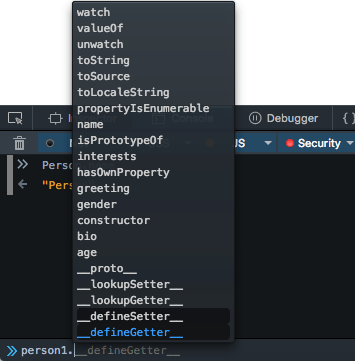
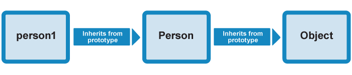

Prototypes are the mechanism by which JavaScript objects inherit features from one another. In this article, we explain how prototype chains work and look at how the prototype property can be used to add methods to existing constructors.
Note: This article covers traditional JavaScript constructors and classes. In the next article, we talk about the modern way of doing things, which provides easier syntax to achieve the same things — see ECMAScript 2015 classes.
| Prerequisites: | Understanding JavaScript functions, familiarity with JavaScript basics (see First steps and Building blocks), and OOJS basics (see Introduction to objects). |
|---|---|
| Objective: | To understand JavaScript object prototypes, how prototype chains work, and how to add new methods onto the prototype property. |
JavaScript is often described as a prototype-based language — to provide inheritance, objects can have a prototype object, which acts as a template object that it inherits methods and properties from.
An object's prototype object may also have a prototype object, which it inherits methods and properties from, and so on. This is often referred to as a prototype chain, and explains why different objects have properties and methods defined on other objects available to them.
In JavaScript, a link is made between the object instance and its prototype (its __proto__ property, which is derived from the prototype property on the constructor), and the properties and methods are found by walking up the chain of prototypes.
Note: It's important to understand that there is a distinction between an object's prototype (available via Object.getPrototypeOf(obj), or via the deprecated __proto__ property) and the prototype property on constructor functions.
The constructor function Foobar() has its own prototype, which can be found by calling Object.getPrototypeOf(Foobar). However this differs from its prototype property, Foobar.prototype, which is the blueprint for instances of this constructor function.
If we were to create a new instance — let fooInstance = new Foobar() — fooInstance would take its prototype from its constructor function's prototype property. Thus Object.getPrototypeOf(fooInstance) === Foobar.prototype.
Let's look at an example to make this a bit clearer.
Here we'll go back to the example in which we finished writing our Person() constructor — load the example in your browser. You can use our oojs-class-further-exercises.html example (see also the source code), if you don't already have it from working through the last article.
In this example, we have defined a constructor function, like so:
function Person(first, last, age, gender, interests) {
// property and method definitions
this.name = {
'first': first,
'last' : last
};
this.age = age;
this.gender = gender;
//...see link in summary above for full definition
}
We have then created an object instance like this:
let person1 = new Person('Bob', 'Smith', 32, 'male', ['music', 'skiing']);
If you type "person1." into your JavaScript console, you should see the browser try to auto-complete this with the member names available on this object:

In this list, you will see the members defined on person1's constructor — Person() — name, age, gender, interests, bio, and greeting. You will however also see some other members — toString, valueOf, etc — these are defined on person1's prototype object's prototype object, which is Object.prototype.

What happens if you call a method on person1, which is actually defined on Object.prototype? For example:
person1.valueOf()
valueOf() returns the value of the object it is called on. In this case, what happens is:
person1 object has a valueOf() method available on it, as defined on its constructor, Person(), and it doesn't.person1's prototype object has a valueOf() method available on it. It doesn't, then the browser checks person1's prototype object's prototype object, and it has. So the method is called, and all is good!Note: We want to reiterate that the methods and properties are not copied from one object to another in the prototype chain. They are accessed by walking up the chain as described above.
Note: The prototype chain is traversed only while retrieving properties. If properties are set or deleted directly on the object, the prototype chain is not traversed.
Note: Before ECMAScript 2015, there wasn't officially a way to access an object's prototype directly — the "links" between the items in the chain are defined in an internal property, referred to as [[prototype]] in the specification for the JavaScript language (see {{glossary("ECMAScript")}}).
Most modern browsers, however, do offer property available called __proto__ (that's 2 underscores either side), which contains the object's constructor's prototype object. For example, try person1.__proto__ and person1.__proto__.__proto__ to see what the chain looks like in code!
Since ECMAScript 2015, you can access an object's prototype object indirectly via Object.getPrototypeOf(obj).
So, where are the inherited properties and methods defined? If you look at the Object reference page, you'll see listed in the left hand side a large number of properties and methods — many more than the number of inherited members we saw available on the person1 object. Some are inherited, and some aren't — why is this?
As mentioned above, the inherited ones are the ones defined on the prototype property (you could call it a sub-namespace) — that is, the ones that begin with Object.prototype., and not the ones that begin with just Object. The prototype property's value is an object, which is basically a bucket for storing properties and methods that we want to be inherited by objects further down the prototype chain.
So Object.prototype.toString(), Object.prototype.valueOf(), etc., are available to any object types that inherit from Object.prototype, including new object instances created from the Person() constructor.
Object.is(), Object.keys(), and other members not defined inside the prototype bucket, are not inherited by object instances or object types that inherit from Object.prototype. They are methods/properties available just on the Object() constructor itself.
Note: This seems strange — how can you have a method defined on a constructor, which is itself a function?
Well, a function is also a type of object. See the Function() constructor reference if you don't believe us.
Person.prototype
prototype always starts empty. Now try the following:
Object.prototype
You'll see a large number of methods defined on Object's prototype property, which are then available on objects that inherit from Object, as shown earlier.
You'll see other examples of prototype chain inheritance all over JavaScript — try looking for the methods and properties defined on the prototype of the String, Date, Number, and Array global objects, for example. These all have a number of members defined on their prototype, which is why for example when you create a string, like this:
let myString = 'This is my string.';
myString immediately has a number of useful methods available on it, like split(), indexOf(), replace(), etc.
Note: It is worth reading our more in-depth guide to "Using prototypes in JavaScript", once you've made sense of this section and wish to know more. This section is intentionally simplified to make these concepts a little easier to understand when you first meet them.
Important: The prototype property is one of the most confusingly-named parts of JavaScript — you might think that it points to the prototype object of the current object, but it doesn't (that's an internal object that can be accessed by __proto__, remember?). prototype instead is a property containing an object on which you define members that you want to be inherited.
Earlier on we showed how the Object.create() method can be used to create a new object instance.
let person2 = Object.create(person1);
create() actually does is to create a new object from a specified prototype object. Here, person2 is being created using person1 as a prototype object. You can check this by entering the following in the console:
person2.__proto__
This will return the person1 object.
Every constructor function has a prototype property whose value is an object containing a constructor property. This constructor property points to the original constructor function.
As you will see in the next section, properties defined on the Person.prototype property (or in general on a constructor function's prototype property, which is an object, as mentioned in the above section) become available to all the instance objects created using the Person() constructor. Hence, the constructor property is also available to both person1 and person2 objects.
person1.constructor person2.constructor
These should both return the Person() constructor, as it contains the original definition of these instances.
A clever trick is that you can put parentheses onto the end of the constructor property (containing any required parameters) to create another object instance from that constructor. The constructor is a function after all, so can be invoked using parentheses; you just need to include the new keyword to specify that you want to use the function as a constructor.
let person3 = new person1.constructor('Karen', 'Stephenson', 26, 'female', ['playing drums', 'mountain climbing']);
person3.name.first person3.age person3.bio()
This works well. You won't need to use it often, but it can be really useful when you want to create a new instance and don't have a reference to the original constructor easily available for some reason.
The constructor property has other uses. For example, if you have an object instance and you want to return the name of the constructor it is an instance of, you can use the following:
instanceName.constructor.name
Try this, for example:
person1.constructor.name
Note: The value of constructor.name can change (due to prototypical inheritance, binding, preprocessors, transpilers, etc.). Therefore, for more complex examples, you'll want to use the instanceof operator instead.
Let's have a look at an example of modifying the prototype property of a constructor function — methods added to the prototype are then available on all object instances created from the constructor. At this point we'll finally add something to our Person() constructor's prototype.
prototype property:
Person.prototype.farewell = function() {
alert(this.name.first + ' has left the building. Bye for now!');
};
person1.farewell();
You should get an alert message displayed, featuring the person's name as defined inside the constructor. This is really useful, but what is even more useful is that the whole inheritance chain has updated dynamically, automatically making this new method available on all object instances derived from the constructor.
Think about this for a moment. In our code we define the constructor, then we create an instance object from the constructor, then we add a new method to the constructor's prototype:
function Person(first, last, age, gender, interests) {
// property and method definitions
}
let person1 = new Person('Tammi', 'Smith', 32, 'neutral', ['music', 'skiing', 'kickboxing']);
Person.prototype.farewell = function() {
alert(this.name.first + ' has left the building. Bye for now!');
};
But the farewell() method is still available on the person1 object instance — its members have been automatically updated to include the newly defined farewell() method.
delete operator removes the respective properties from all other class instances too.delete person1.__proto__.farewell or delete Person.prototype.farewell would remove the farewell() method from all Person instances.Object.defineProperty() instead.Note: If you are having trouble getting this example to work, have a look at our oojs-class-prototype.html example (see it running live also).
You will rarely see properties defined on the prototype property, because they are not very flexible when defined like this. For example you could add a property like so:
Person.prototype.fullName = 'Bob Smith';
This isn't very flexible, as the person might not be called that. It'd be much better to build the fullName out of name.first and name.last:
Person.prototype.fullName = this.name.first + ' ' + this.name.last;
However, this doesn't work. That's because this will be referencing the global scope in this case, not the function scope. Calling this property would return undefined. This worked fine on the method we defined earlier in the prototype because it is sitting inside a function scope, which will be transferred successfully to the object instance scope. So you might define constant properties on the prototype (i.e. ones that never need to change), but generally it works better to define properties inside the constructor.
In fact, a fairly common pattern for more object definitions is to define the properties inside the constructor, and the methods on the prototype. This makes the code easier to read, as the constructor only contains the property definitions, and the methods are split off into separate blocks. For example:
// Constructor with property definitions
function Test(a, b, c, d) {
// property definitions
}
// First method definition
Test.prototype.x = function() { ... };
// Second method definition
Test.prototype.y = function() { ... };
// etc.
This pattern can be seen in action in Piotr Zalewa's school plan app example.
You've reached the end of this article, but can you remember the most important information? You can find some further tests to verify that you've retained this information before you move on — see Test your skills: Object-oriented JavaScript.
Note that this set of tests relies on some of the knowledge taught in the next article, so you might want to read that first before you try them.
This article has covered JavaScript object prototypes, including how prototype object chains allow objects to inherit features from one another, the prototype property and how it can be used to add methods to constructors, and other related topics.
In the next article we'll look at how you can implement inheritance of functionality between two of your own custom objects.
{{PreviousMenuNext("Learn/JavaScript/Objects/Object-oriented_JS", "Learn/JavaScript/Objects/Inheritance", "Learn/JavaScript/Objects")}}